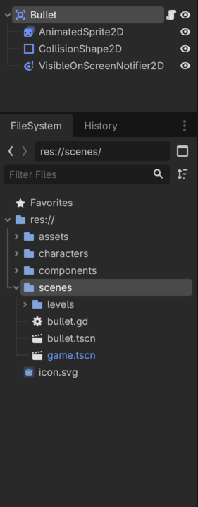
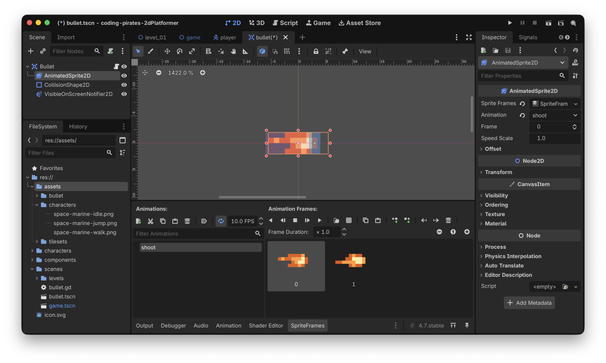
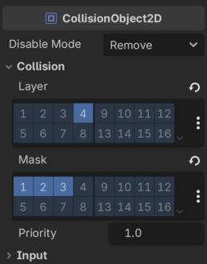
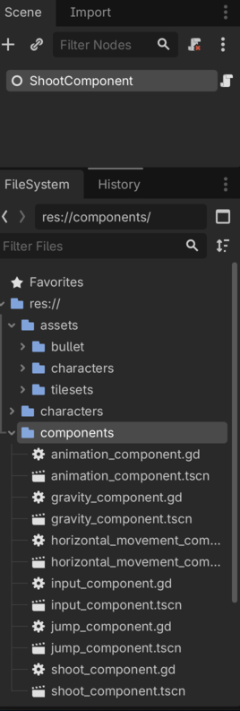
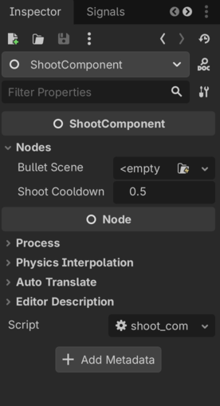
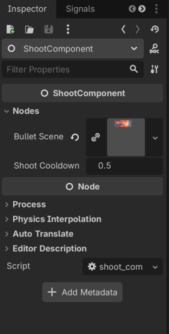

Godot 2D Platformer - level 9 skyd!
I level 8 fik vi vores Player
til at hoppe så nu kan vi bevæge os rundt men hvis vi skal overleve
mødet med fjender skal vi også kunne skyde, lad os kigge på det i denne
lektion.
Så...
Hvad er det vi gerne vil?
Få vores spiller til at skyde!
OK, det har vi jo gjort før i vores 2D space shooter, mest da vi skulle sætte kugler fra vores fjender. Det kræver at vi:
- Opdager at der er trykket på "skyd"
- Opretter en ny
Bulletscene - Sætter
Bullets position og retning ud fra vores egen position og retning - Lader
Bullets script håndtere resten
Første skridt er let, ligesom vi kunne spørge vores
InputComponent om jump_was_pressed() så vil vi
også kunne spørge om shoot_was_pressed()
Så skal vi have lavet en ny Bullet scene af typen
Area2D og have sat en AnimatedSprite2D og så
videre på den.
Og til sidste del kan vi lave en ShootComponent med en
funktion som vi - til at starte med - giver:
- Vores position
- Vores retning
Og ud fra det kan ShootComponent så
- Oprette en
Bullet - Sætte position og retning på
Bullet - Tilføje
Bullettil vores "verden" så den bevæger sig
Så...tre ting vi skal have lavet, vi kan lave en liste så vi kan krydse af efterhånden som vi kommer fremad.
Lad os fyre den af!
Tilføj
shoot_was_pressed() til InputComponent
Nemt! Kig på vores eksisterende InputComponent og se om
du kan lave funktionen selv inden du kigger her nedenfor. Du skal
~stjæle~ søge kraftig inspiration i den eksisterende
jump_was_pressed() funktion.
func shoot_was_pressed() -> bool:
return Input.is_action_just_pressed("fire")Bang! Videre
Lav en ny Bullet scene
I "scenes" mappen laver du:
- En ny scene af typen
Area2D - Som du giver navnet "Bullet"
- Og gemmer som "bullet.tscn" i "scenes" mappen
Og så tilføjer du:
- En
AnimatedSprite2Dnode - En
CollisionShape2Dnode - En
VisibleOnScreenNotifierså vi kan rydde op når vi forsvinder - Et script som du gemmer sammen med scenen under navnet "bullet.gd"
Det ser sådan her ud

Tilføj animation og collision shape
Under de assets du downloadede kan du finde filen "bullet.png" som har to billeder.
- Opret en ny mappe kaldet "bullets" under "assets" og træk så "bullets.png" ind i den nye mappe
- Nu kan du bruge den på din
AnimatedSprite2Dtil at lave en animation som vi kalder for "shoot" - Tilføj en "Rectangle" shape til din
CollisionShape2Dog ret den til så den passer med spidsen af vores kugle (det er den lyseblå frame) - Ret også størrelsen på din
VisibleOnScreenNotifiertil så den passer med størrelsen af vores kugle billede (det er den lilla/rødlige frame)
Nu skulle det gerne se sådan her ud ved dig

Og så en vigtig ting som du ikke vil springe over at læse!
Godt :)
Vi skal jo lige huske at sætte "CollisionLayer" og "CollisionMask"
for vores Bullet, ellers kommer den jo aldrig til at ramme
noget.
Så:
- Vælg din
Bulleti venstre side - I "Inspectoren" i højre side finder du sektionen omkring "CollisionObject2D"
Og herunder finder du nu settings for "CollisionLayer" og "CollisionMask" ved at folde "Collision" sektionen ud
Kan du huske dem?
- CollisionLayer...hvilket lag vil vi gerne selv være i? Vi har jo lavet et lag kaldet "Bullets" (nummer 4) så det vælger vi
- CollisionMask...hvilke lag vil vi gerne støde sammen med? Det er vel næsten alt, Terrain, Player og Enemies, lag 1, 2 og 3, så dem vælger vi
Vær sikker på at det ser sådan her ud:

Script
Videre til vores script. Vi vil - i første omgang - gerne tre ting:
Lad os tage dem en af gangen
Add funktion
Hvad vil vi?
Vi vil have en funktion som vi kalder add og som
tager:
- En position som vi kalder
possom er af typenVector2som fortæller os hvor kuglen skal placeres - En direction som vi kalder
dirsom er af typenVectorsom fortælles os om vi skal skyde mod venstre (x = -1) eller højre (x = 1) afhængigt af hvor den der har skudt kigger henad - Et offset som vi kalder
offsetsom er af typenVector2så vi kan justere positionen lidt (så det ser ud som om skuddet kommer fra spidsen af et gevær og ikke inde fra maven af voresPlayerf.eks) - Funktionen skal ikke returnere noget
Lad os skrive signaturen:
func add(pos: Vector2, dir: Vector2, offset: Vector2) -> void:Og så kan vi bruge de paremetre til at:
- Beregne og sætte vores
Bulletspositionsom også er enVector2(altså en X og en Y værdi).- X værdien er pos.x + (offset.x * dir)
- Y værdien er pos.y + (offset.y * dir)
- Gemme
dirså vi kan bruge den i_physics_process - Finde ud af om vi skal flippe
AnimatedSprite2D.flip_hud fradir - Starte
AnimatedSprite2Ds animation
Det ser sådan her ud:
# Skal vi skyde mod venstre eller højre
var direction: Vector2 = Vector2.RIGHT
func add(pos: Vector2, dir: Vector2, offset: Vector2) -> void:
# regn x og y ud for vores bullet
var x_pos = pos.x + (dir.x * offset.x)
var y_pos = pos.y + (dir.y * offset.y)
# og sæt vores Bullets position ud fra de
# udregnede værdier
position = Vector2(x_pos, y_pos)
# gem direction
direction = dir
# hvordan skal vores animation vende?
$AnimatedSprite2D.flip_h = dir.x < 0
$AnimatedSprite2D.play("shoot")Puha, det var det første - og heldigvis sværeste skridt:
_physics_process
Implementationen af _physics_process er lettere.
Vi skal bruge:
- en hastighed
- en delta værdi
- en retning
Det eneste vi ikke har er en hastighed så lad os tilføje det som en
@export var speed: float = 400 øverst i vores script.
Og så ser _physics_process sådan her ud:
func _physics_process(delta: float) -> void:
position += speed * delta * directionHer er hele vores script:
extends Area2D
@export_subgroup("Properties")
@export var speed: float = 400.0
# Skal vi skyde mod venstre eller højre
var direction: Vector2 = Vector2.RIGHT
func add(pos: Vector2, dir: Vector2, offset: Vector2) -> void:
# regn x og y ud for vores bullet
var x_pos = pos.x + (dir.x * offset.x)
var y_pos = pos.y + (dir.y * offset.y)
# og sæt vores Bullets position ud fra de
# udregnede værdier
position = Vector2(x_pos, y_pos)
# gem direction
direction = dir
# hvordan skal vores animation vende?
$AnimatedSprite2D.flip_h = dir.x < 0
$AnimatedSprite2D.play("shoot")
func _physics_process(delta: float) -> void:
position += speed * delta * directionTada
Fjerne kugle når den forlader skærmen
Det vi gerne vil her - som vi også gjorde i vores 2D space shooter -
er, at connecte til det signal der hedder "screen_exited" på vores
VisibleOnScreenNotifier2D
Vi har tidligere brugt "Inspectoren" til at connecte til Signals men...vi er gamle og garvede nu, så vi kan gøre det hele i vores script.
Det kræver at vi
- i
_readysiger at vi gerne vil lytte på "screen_exited" og hvad der skal ske når det signal bliver sendt - og så laver vi den funktion der skal kaldes når "screen_exited" kaldes.
Det ser sådan her ud, først fortæller vi at vi gerne vil connected
til "screen_exited" på vores VisibleOnScreenNotifier2D og
at når det signal bliver fyret, så vil vi kalde en funktion som vi
kalder _on_screen_exited
func _ready() -> void:
$VisibleOnScreenNotifier2D.connect("screen_exited", _on_screen_exited)Og nu vil der så komme røde streger på den linie vi lige skrev og vi vil få fejlen:
Error at (10, 57): Identifier "_on_screen_exited" not declared in the current scope.
Hvilket bare betyder: "Hey!!! Du har sagt at der skal kaldes en
funktion der hedder _on_screen_exited men jeg kan ikke
finde den!! Hjælp!! Stop alt!!
Rolig nu, vi skal jo først til at lave den, det gør vi nu:
func _on_screen_exited() -> void:
queue_free()Og så blev der ro. Her er hele vores script:
extends Area2D
@export_subgroup("Properties")
@export var speed: float = 400.0
# Skal vi skyde mod venstre eller højre
var direction: Vector2 = Vector2.RIGHT
func _ready() -> void:
$VisibleOnScreenNotifier2D.connect("screen_exited", _on_screen_exited)
func add(pos: Vector2, dir: Vector2, offset: Vector2) -> void:
# regn x og y ud for vores bullet
var x_pos = pos.x + (dir.x * offset.x)
var y_pos = pos.y + (dir.y * offset.y)
# og sæt vores Bullets position ud fra de
# udregnede værdier
position = Vector2(x_pos, y_pos)
# gem direction
direction = dir
# hvordan skal vores animation vende?
$AnimatedSprite2D.flip_h = dir.x < 0
$AnimatedSprite2D.play("shoot")
func _physics_process(delta: float) -> void:
position += speed * delta * direction
func _on_screen_exited() -> void:
queue_free()Tada igen
Og vi kan strege endnu mere
Videre til sidste del som binder det hele sammen
Lav en ny
ShootComponent
Vi skal have lavet en ny component som vi kan bruge til at skyde med, det er det sædvanlige cirkus
- Lav en ny Node2D
- Kald den "ShootComponent"
- Gem dem som
shoot_component.tscnunder "components" - Tilføj et script til "ShootComponent"
Det ser sådan her ud:

Script
Vores script skal:
- Afgøre om vi kan skyde eller ej, så vi skal bruge en
var can_shoot: bool = true - Hvis vi kan skyde, så lav en ny
Bulletscene, så vi skal også bruge enPackedScenesom vi gjorde i vores 2D space shooter - Kalde
addpå vores nyeBullet - Starte en cooldown timer så vi ikke kan skyde lige med det samme
Lad os tage det skridt for skridt
Skelet og variabler vi skal bruge
Som vi fandt ud af ovenfor skal vi bruge nogle variabler:
can_shoot: bool = truefor at afgøre om vi kan skyde eller ej@export var bullet_scene: PackedScenefor at kunne lave en nyBullet@export var shoot_cooldown_period: float = 0.5for at vi ikke kan skyde lige med det samme
Lad os lave det, sammen med det sædvanlige class_name i
toppen af vores script.
class_name ShootComponent
extends Node
@export_subgroup("Nodes")
@export var bullet_scene: PackedScene
@export var shoot_cooldown_period: float = 0.5
var can_shoot: bool = truehandle_shoot_requested
funktion
Vi skal have lavet en funktion
- Der hedder
handle_shoot_requested - Som tager en input parameter kaldet
posaf typenVector2 - Og en anden input parameter kaldet
dirogså af typenVector2 - Og en tredje input parameter kaldet
offsetogså af typenVector2 - Og som ikke returnerer noget
Lad os lave den signatur:
func handle_shoot_requested(pos: Vector2, dir: Vector2, offset: Vector2) -> void:Og så logikken
- Kan vi skyde?
- Hvis vi kan skyde så lav en ny
Bulletog kaldaddpå den - Og tilføj den til view hierakiet
- Og start en cooldown timer
Omkring timer. Her har vi også tidligere lavet en Timer
og forbundet til den, men det kan vi også gøre smartere som du kan se
nedenfor:
func handle_shoot_requested(pos: Vector2, dir: Vector2, offset: Vector2) -> void:
# må vi overhovedet skyde?
if not can_shoot:
# næh...nå men så stopper vi da bare her!
return
# lav en ny bullet
var bullet = bullet_scene.instantiate()
# og sæt den op med de rigtige værdier
bullet.add(pos, dir, offset)
# og smid den i view hierakiet
get_tree().root.add_child(bullet)
# sørg for at vi ikke kan skyde med det samme
can_shoot = false
# vent!
await get_tree().create_timer(shoot_cooldown_period).timeout
# og sig at nu kan vi skyde igen
can_shoot = trueDet skulle være det for vores ShootComponent i første
omgang
Sidste runde!
Tilføj
ShootComponent til Player
Vi har været der før.
- Tilføj en
@export var shoot_component: ShootComponenttil voresPlayerscript - "Instantiate Child scene" og tilføje
shoot_component.tscnpå voresPlayer - Assigne
ShootComponenttil "Shoot Component" i "Inspectoren" for vores "Player"
Men! Vi skal også lige huske at trække "bullet.tscn" til "Bullet Scene" på vores "ShootComponent" under vores "Player"
Så.
- Under "Player" i venstre side vælger du "ShootComponent"
- I "Inspectoren" i højre side finder du "ShootComponent" og herunder "Nodes"

- Nu kan du trække din "bullet.tscn" til "Bullet Scene" så den bliver assigned

Opdater Player script
Og så...endelig, efter meget arbejde, er vi der hvor det bliver nemt.
I vores Player script kan vi nu i
_process:
Spørge vores InputComponent om
shoot_was_pressed() og hvis det var tilfældet skal vi regne
ud om vi kigger mod venstre eller højre, hvem kan hjælpe os med det?
Det kan AnimationComponent vel, den har styr på om
flip_h er sat eller ej.
Udvid
AnimationComponent
Vi laver lige en lille hjælpefunktion på
AnimationComponent som kan give os:
- -1 hvis vi kigger mod venstre
- 1 hvis vi kigger mod højre
Tilføj den her funktion i din AnimationComponent
func get_sprite_direction() -> float:
return -1 if sprite.flip_h else 1Tilbage i Player
script
Hvor vi nu har alle brikker:
- Hvis vores
InputComponentsiger atshoot_was_pressed() - Så spørger vi
AnimationComponentomget_sprite_direction() - Og så kan vi kalde
handle_shoot_requestedpåShootComponentmed:
- Vores egen
position - Den
directionvi lige har fået at vide - Et offset på x = 16 så vi får lidt luft på X aksen mellem vores
CharacterBody2DogBullet
Det ser sådan her ud i _process:
if input_component.shoot_was_pressed():
var direction = Vector2.LEFT if animation_component.get_sprite_direction() == -1 else Vector2.RIGHT
shoot_component.handle_shoot_requested(position, direction, Vector2(16, 0))Og for en god ordens skyld er her hele vores Player
script:
extends CharacterBody2D
@export_subgroup("Nodes")
@export var animation_component: AnimationComponent
@export var gravity_component: GravityComponent
@export var horizontal_movement_component: HorizontalMovementComponent
@export var input_component: InputComponent
@export var jump_component: JumpComponent
@export var shoot_component: ShootComponent
func _physics_process(delta: float) -> void:
gravity_component.handle_gravity(self, delta)
horizontal_movement_component.handle_horizontal_movement(self, input_component.horizontal_direction)
jump_component.handle_jump(self, input_component.jump_was_pressed())
move_and_slide()
func _process(delta: float) -> void:
animation_component.handle_move_animation(input_component.horizontal_direction)
animation_component.handle_jump_animation(gravity_component.is_jumping, gravity_component.is_falling)
if input_component.shoot_was_pressed():
var direction = Vector2.LEFT if animation_component.get_sprite_direction() == -1 else Vector2.RIGHT
shoot_component.handle_shoot_requested(position, direction, Vector2(16, 0))Sandhedens time
Kør dit spil og prøv at skyd! Pew pew!
Kanon!
Det var en lang lektion men nu kan vi skyde og er klar til at møde
nogle fjender. Men hvor er de? Lad os begynde at tilføje dem i næste
lektion, nu skulle alt vores komponent arbejde gerne begynde at gøre det
nemt. Vi kan i alle tilfælde bruge GravityComponent,
MoveComponent og AnimationComponent med det
samme, vi skal godtnok lige regne ud hvordan vi fortæller vores fjender
hvilken vej de skal gå men det er der heldigvis også en løsning
på.
Glæd dig og vi ses i næste lektion!